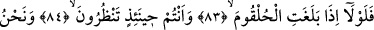
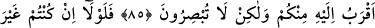
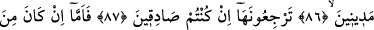
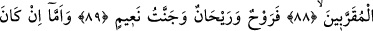
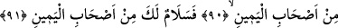
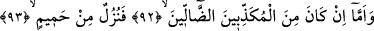
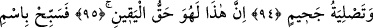
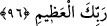

CAN BOĞAZA
DAYANDIĞI ZAMAN
83. Hele can boğaza dayandığı zaman,
84. O vakit siz bakar durursunuz.
85. (O anda) biz ona sizden daha yakınız, ama göremezsiniz.
86. Madem ki cezâ görmeyecekmişsiniz,
87. Onu (canı) geri çevirsenize, şayet iddianızda doğru iseniz!
88. Fakat (ölen kişi Allah’a) yakın olanlardan ise,
89. Ona rahatlık, güzel rızık ve Naîm cenneti vardır.
90. Eğer o sağdakilerden ise,
91. «Ey sağdaki! Sana selam olsun!»
92. Ama yalanlayıcı sapıklardan ise,
93. İşte ona da kaynar sudan bir ziyafet vardır!
94. Ve (onun sonu) cehenneme atılmaktır.
95. Şüphesiz ki bu, kesin gerçektir.
96. Öyleyse ulu Rabbinin adını tenzih ile an.
Bu âyet-i kerîmede levlâ edatı onların aczini ve güçsüzlüklerini ortaya koymak için
getirilmiştir. İzâ edatı ise zarf ifâde etmektedir. Hulkûm, yemek borusudur.
Keşfü’l-esrar’da, hulkum’un nefes borusu, bel‘um’un ise yemek borusu olduğu
kaydedilmektedir. Buna göre mânâ şöyle olur: “Ruh veya sizden birinizin rûhu hulkûma
dayandığı ve çıkmağa başladığı zaman...”
Bir hadis-i şerifte şöyle buyrulmuştur: “Şübhesiz ki, ölüm meleğinin bir takım
yardımcıları vardır, onlar damarları keser ve rûhu peyderpey toplarlar. Ruh hulkûma